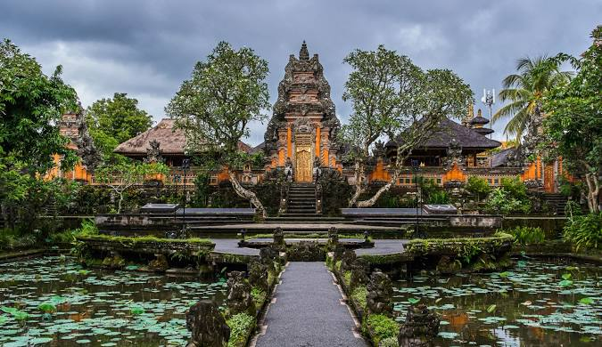

Ubud
Ubud, yang terletak di jantung Pulau Bali, adalah tempat di mana tradisi budaya yang kaya dan keindahan alam yang tenang bertemu, menciptakan destinasi yang menenangkan dan memikat hati. Terkenal sebagai pusat seni dan kebudayaan Bali, Ubud menawarkan galeri seni yang menakjubkan, pertunjukan tari tradisional yang memukau, dan pasar seni yang ramai dengan kerajinan tangan lokal. Pengunjung dapat menikmati ketenangan sawah hijau yang luas atau menjelajahi hutan monyet yang mistis. Desa-desa di sekitarnya menawarkan suasana yang damai dan pemandangan yang menenangkan dari lembah sungai dan terasering sawah yang ikonik. Untuk mereka yang mencari pengalaman spiritual, Ubud juga dikenal dengan retret yoga dan pusat kesehatan yang menenangkan. Setiap sudut Ubud membawa kedamaian dan keindahan yang menawan, menjadikannya tujuan ideal untuk pelarian yang menginspirasi.